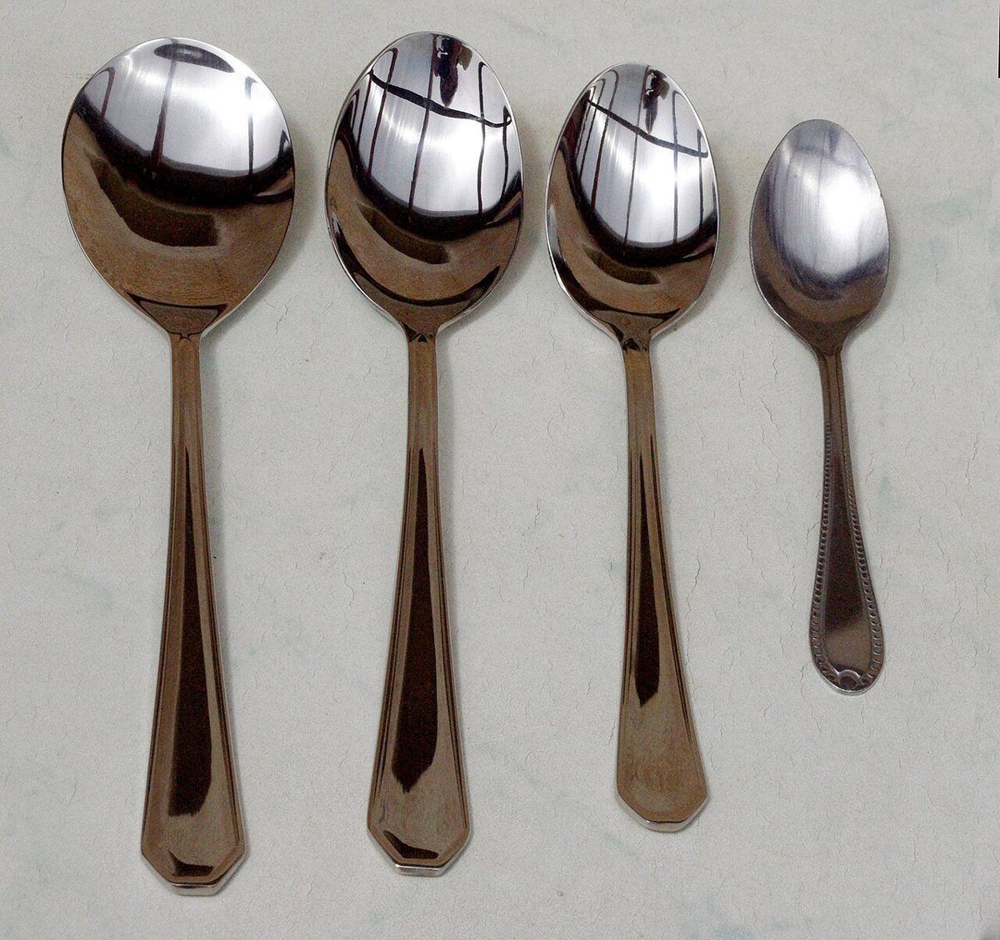
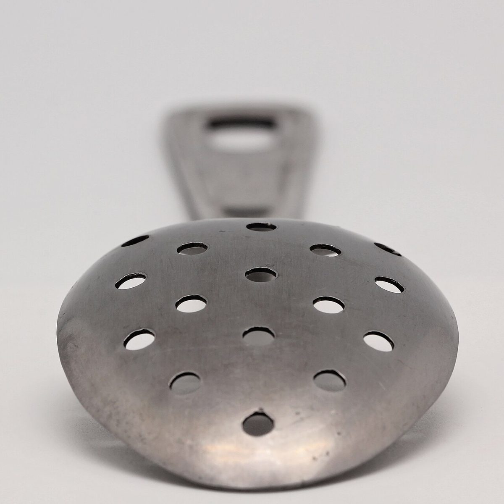

02 / 05サラサラ
音カード 2枚め
サラサラ(さらさら)
粉をふるう、豆をすくう。そんな軽い音のイメージで、メニューの枠を並べました。内容は準備中です。
メニュー・価格・提供内容はお店に確認できていないため、すべて準備中です。以下の枠は見本で、実際の提供内容を示すものではありません。
- Aメニュー名準備中
- Bメニュー名準備中
- Cメニュー名準備中
- Dメニュー名準備中
メニューが分かり次第、こちらに掲載します。最新情報はInstagramへ。
イメージ写真
ふるう・すくう・並べる


